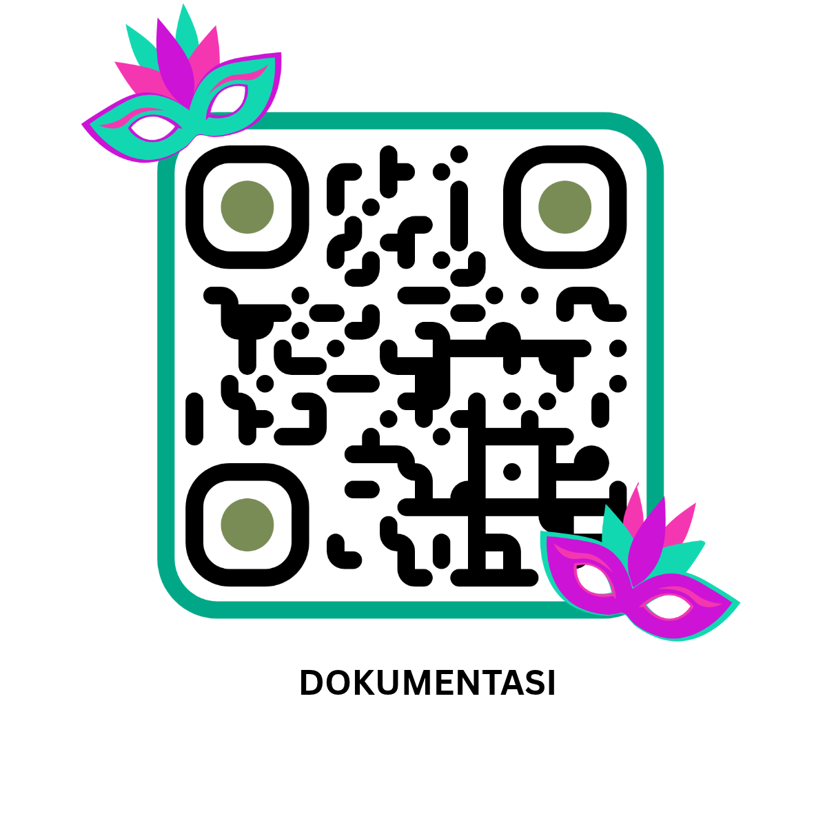

Hari 1: Isnin (2 November 2026)
Fokus: Perjalanan Peserta, Daftar Masuk Asrama, dan Pengurusan Kendiri
Pendaftaran Kehadiran Peserta
Sila imbas Kod QR di bawah atau tekan butang pautan untuk mengesahkan kehadiran anda dalam Sistem Insyst IAB.

SISTEM INSYST IAB
Pautan rasmi: https://sistem.iab.edu.my/insyst/modul-qrcode/daftar_peserta.php?id=51281
Kuliah Subuh
Sesi Keagamaan Dalam Talian Secara Langsung
Hadith 40
al-Fadhil Ustaz alHuzaee bin Sulaiman
Selasa, Rabu, dan Khamis | 6:15 - 6:25 pagi
Pilihan Sambungan Telefon (Dial-in):
- Nombor Telefon (US): +1 386-401-8887
- PIN Panggilan: 952 672 424#
- Senarai nombor telefon lain: Buka Pautan Telefon Antarabangsa
Etika Pakaian Peserta Bengkel
Pakaian Rasmi
- Baju Kemeja dan Tali Leher
- Baju Batik Rasmi
- Pakaian Pejabat Lengkap
Aktiviti/Slot: Perasmian, Suai Kenal, dan Penutupan
Pakaian Sukan
- Baju T-Sukan
- Seluar Sukan Lengkap
- Kasut Sukan yang sesuai
Aktiviti/Slot: Senamrobik dan Kerja Sepasukan
Pakaian Tradisional
- Pakaian Tradisi Budaya Masing-masing (Malaysia)
- Kemas dan Bersopan
Aktiviti/Slot: Malam Budaya IAB
Smart Casual
- Baju Berkolar atau Kemeja Santai
- Seluar Slack Kemas
Aktiviti/Slot: Persediaan Persembahan
Lokasi Aktiviti Utama
Auditorium Perdana
- Taklimat Urus Setia
- Perasmian Pembukaan dan Penutupan
- Sesi Suai Kenal
- Ceramah "I Love Myself"
- Ceramah "Tingkah Laku Organisasi"
Dewan Makan
- Sesi Makan Pagi, Minum Pagi/Petang, dan Makan Malam
- Malam Budaya dan Amanat Kepemimpinan oleh Pengarah
Hadapan Rumah Puspanita
- Sesi Senamrobik
- Aktiviti Pembangunan Kerja Sepasukan
Atur Cara Majlis Rasmi
Aturcara Majlis Pembukaan
- Taklimat Urus setia
- Nyanyian Lagu Negaraku
- Nyanyian Lagu IAB
- Bacaan Doa
- Ucapan Alu-aluan
- Ucapan Perasmian Pembukaan
- Sesi Bergambar
- Bersurai
Aturcara Majlis Malam Budaya
- Nyanyian Lagu Negaraku
- Nyanyian Lagu IAB
- Bacaan Doa
- Ucapan Alu-aluan
- Ucapan Amanat Pengarah
- Persembahan Kebudayaan
- Sesi Bergambar
- Bersurai
Aturcara Majlis Penutupan
- Nyanyian Lagu Negaraku
- Nyanyian Lagu IAB
- Bacaan Doa
- Ucapan Alu-aluan
- Ucapan Perasmian Penutupan
- Sesi Bergambar
- Bersurai
Dokumentasi
Sila imbas Kod QR di bawah atau tekan butang pautan untuk memuat turun bahan penceramahan serta melihat rakaman memori sepanjang bengkel berlangsung.

GOOGLE DRIVE DOKUMENTASI
Pautan Langsung: https://drive.google.com/drive/folders/1U_1M0KHM41lALpBRcGPGFAWwdCWZsMz3?usp=drive_link
Instrumen Maklum Balas dan Penilaian Slot
Penilaian dibahagikan mengikut Fasa Harian. Sila masukkan alamat emel anda untuk pengesahan. Setiap peserta hanya boleh membuat penilaian sekali sahaja bagi setiap fasa.
Sila Pilih Hari Penilaian di Atas
Klik pada salah satu kad hari di atas (Hari 2, Hari 3, atau Hari 4) untuk memaparkan instrumen soalan bagi hari tersebut.
Terima Kasih! Penilaian Anda Telah Diterima
Maklum balas anda telah direkodkan secara langsung ke dalam pangkalan data.
Papan Pemuka Analisis Maklum Balas
Pemantauan bilangan penilai mengikut slot, skor purata, dan carta bar eksklusif bagi setiap item soalan.
Bilangan Penilai Mengikut Slot
Bilangan Responden: 0 orang8
4.85 / 5.00
4.90 / 5.00
Analisis Skor Setiap Item Soalan
Skor purata Skala Likert 1 (Sangat Tidak Setuju) hingga 5 (Sangat Setuju).